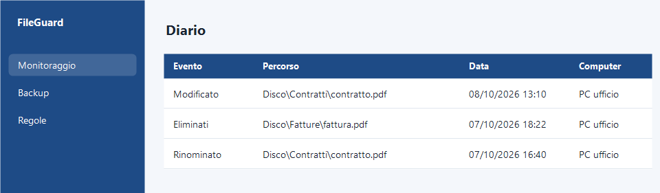
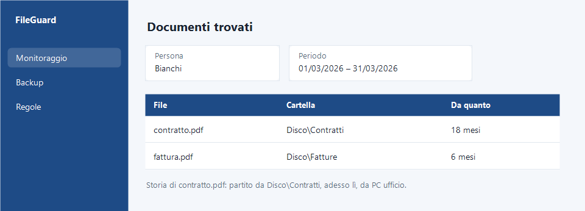

Il fascicolo che non c'è più.
Lunedì mattina il fascicolo del cliente Rossi non è nella sua cartella. Spostato, cancellato, copiato su una chiavetta? Lo cerchi per ore.
FileGuard monitora cartelle e file sensibili, tiene traccia e aiuta nella gestione di privacy e GDPR.
Installazione in pochi minuti · Prova gratuita, acquisto online

Lunedì mattina il fascicolo del cliente Rossi non è nella sua cartella. Spostato, cancellato, copiato su una chiavetta? Lo cerchi per ore.
Vuole sapere quali documenti conservi su di lui, e i file sono sparsi in dieci cartelle.
Un file di un ex cliente è ancora nella cartella. Non sai da quanto, né se puoi archiviarlo.
Una procedura guidata, in pochi minuti. Lo stesso account vale su tutti i tuoi computer.
Per ogni cartella decidi cosa tenere d'occhio.
Se un file viene cancellato, modificato o spostato, arriva l'avviso. Vedi da quale computer è partita l'azione e dove è finito il file, e lo rimetti al suo posto in un click.

Su ogni cartella accendi quelle che ti servono. La regola ti dice che è successo qualcosa; il programma non cancella nulla da solo.
se qualcuno elimina un file, arriva l'avviso.
se un file viene modificato, resta la traccia e arriva l'avviso.
se un file esce dalla cartella, vedi dove è finito, anche su un'unità esterna.
vedi da dove è partito il file e dove si trova adesso.
se un file che deve stare nella cartella non c'è, lo vedi.
vedi da quanto tempo i file sono nella cartella e se è possibile archiviarli. Decidi tu.
Per chi tiene documenti di altre persone.
Fascicoli e atti degli assistiti
Cartelle cliniche e referti
Cartelle, lastre e preventivi dei pazienti
Bilanci e dichiarazioni dei clienti
Buste paga e contratti dei lavoratori
Cartelle e appunti riservati
Atti, rogiti e documenti del cliente
Pratiche fiscali e previdenziali dei clienti
Il backup salva una copia. FileGuard ti dice anche cosa è successo al file.
| Solo backup | Con FileGuard | |
|---|---|---|
| Ho una copia del file? | Sì | Sì, sui tuoi sistemi |
| So da quale computer è stato spostato o cancellato? | No | Sì |
| So dove è finito? | No | Sì, anche su un'unità esterna |
| Ricevo un avviso? | Di solito no | Sì |
| Ho regole diverse per ogni cartella? | No | Sì, fino a sei |
quando un cliente o un paziente chiede quali dati conservi, FileGuard trova tutti i suoi documenti in un periodo.
vedi da quanto ogni documento è nella cartella e se è possibile archiviarlo. Quanto tenerlo lo decidi tu.
ripercorri da dove è partito e dove si trova adesso.
FileGuard non sostituisce il consulente privacy: ti aiuta a tenere sotto controllo i file che segue.

Le copie restano su disco, server, NAS o un cloud che usi già. Non sui sistemi di Egonex.
FileGuard non blocca e non cancella: ti avvisa e ti lascia decidere.
Software italiano di Egonex S.R.L.
Il prezzo si calcola in base alle funzioni che scegli. Prova gratis per [N] giorni, [carta di credito sì o no].
Vedi i piani →No. Ti avvisa e puoi rimettere il file al suo posto. Così nessuno resta bloccato nel lavoro.
Nessun software lo fa da solo. FileGuard ti aiuta a tenere sotto controllo i file che segue.
Pochi minuti, con una procedura guidata.
[da confermare]
No. Le copie sono sui tuoi sistemi e restano tue. [da confermare]
[guide online, email: da definire]
Lo installi in pochi minuti, scegli una cartella e vedi come funziona.